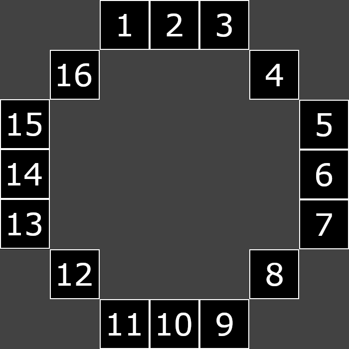

ORB is a method of selecting and comparing points in an image. This is a useful component of visual odometry, which is a method of measuring the distance between two images as a method of approximating motion. Fundamentally, ORB seeks to answer two questions:
To answer these questions, ORB uses a number of steps beginning with the FAST corner detector to select keypoints. Features from Accelerated Segment Test (FAST) is a method developed in 2006 for detecting corners. It differs from other corner detectors in its method of detecting corners by examining their surroundings rather than tracking the slopes of lines in the image. It accomplishes this with the Bresenham circle.

A FAST detector takes two parameters n and t. For each pixel in an image, FAST checks whether n contiguous surrounding pixels are brighter or darker than a center pixel by at least t.
In practice this naïve implementation is far too slow. An ID3 decision tree is used to learn the order at which surrounding pixels should be examined for a more efficient classification.
Once keypoints have been extracted, a couple measures are taken to reduce the number. First is Non-Maximal Suppression (NMS), a technique used to eliminate adjacent keypoints that offer less information than their neighbors. More formally, we calculate a score for each corner based on the highest value for t such that the pixel is still considered a corner. Then, for each corner we compare it to the 8 adjacent pixels. If it is not the largest, this corner is discarded. This particularly helps with eliminating keypoints along edges.
The next filtration step is filtering out all but the top 1,000 keypoints using the Harris Corner Response metric proposed alongside Chris Harris's corner detector. This response is loosely based on the derivative of an image, which is not strictly defined, but is approximated through the Sobel operator. This is a filter that, when convolved with an image produces an x and y gradient that are used in computing the Harris score.
Using a heap, we then eliminate all but the best 1,000 points and move on to comparing the points to enable odometry.
With fewer keypoints the next step is to calculate their orientation. This is done through a method called the intensity centroid, which is a method for determining the angle at which the intensity grows the strongest. Essentially, the intensity centroid keeps an x value and a y value that is generated by looking at each pixel in a circle around the keypoint and weighing them by their distance from the keypoint. By taking the inverse tangent of the x and y values, we obtain an angle that is used for the keypoint.
We now move to the final step of ORB, which is BRIEF or Binary Robust Independent Elementary Features. The idea behind BRIEF is to create a set of 256 tests that evaluate to either true or false. Taking the outcome of all these tests, we can form a binary number representing a given keypoint. These tests each contain two pixels: a reference pixel and a comparison pixel. If the comparison pixel is brighter than the reference pixel, we put a 1 in the bit that represents that test. Otherwise, we place a 0. The Hamming distance (the number of different bits) is then used to evaluate the similarity between keypoints.
On its own, BRIEF is very sensitive to rotations as the tests do not rotate with the image. Thus, we use the orientation generated by the intensity centroid to rotate the tests, allowing BRIEF to become rotation invariant. However, the question of how we choose our tests remains. These tests are selected by first enumerating all possible tests and running them on a training dataset. We sort the tests by the absolute difference of their means from 0.5, meaning that the most divisive tests are prioritized. The second condition is that selected tests must be as uncorrelated to the already added tests as possible. This is measured through the φ-coefficient.
With all these pieces in place, we can place the ORB system within ORB-SLAM. The effect of this change is seen here:
Original ORB-SLAM Demo
My ORB Implementation
As we can see, my implementation performs better in this demo, but the original ORB-SLAM system outperformed mine in other footage distributed with the ORB-SLAM package. The exact cause of these discrepancies warrants further investigation, but it is likely related to the bag of words model ORB-SLAM uses to compare different images. In our exploration, we discovered that the vocabulary used to train this bag of words is greatly impacted by the training dataset. One possible explanation is that the dataset used to train my version of ORB is more generalizable. Another explanation is that this is one of few examples in which the original ORB-SLAM is not performant.
Works Cited